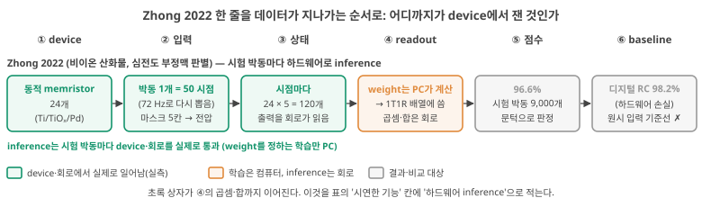
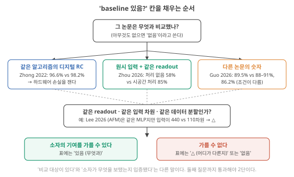
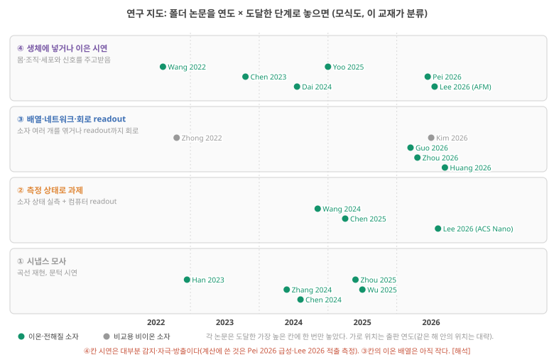
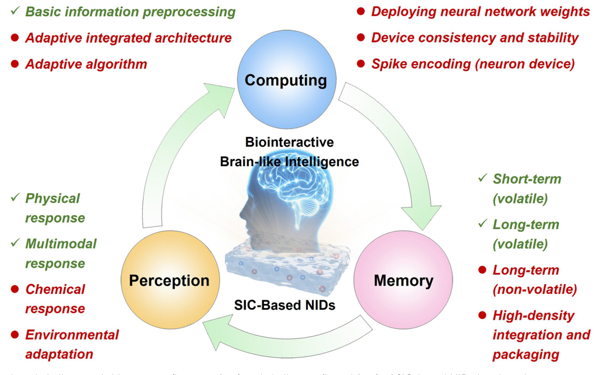
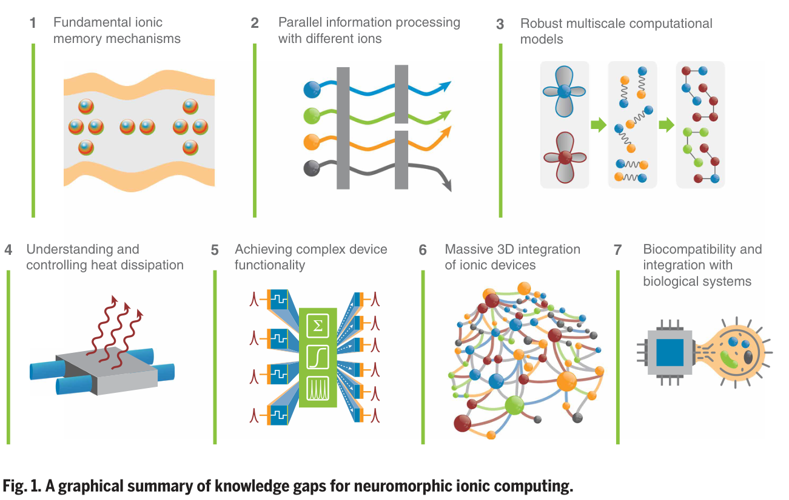

Day 47. 논문 평가 표와 연구 지도
Phase 5 · 나는 무엇을 연구해야 하는가
이번 질문 이온 뉴로모픽 논문을 어떤 표로 평가하고, 분야는 어디까지 왔나?
왜 배우나 (내 소재 연구와의 연결) 논문을 읽을 때마다 "MNIST 98%", "이식 시연" 같은 문장을 어디까지 믿고 인용해도 되는지 판단해야 합니다. 오늘은 그 판단을 'device class · 시연한 기능 · 지표 · baseline · 빠진 것'의 다섯 칸으로 적는 연습입니다. 내 소재 논문의 초록 문장도 같은 칸으로 점검하게 됩니다.
오늘의 장면 (입력 → 내부 변화 → 출력) 입력 = 논문 한 편의 결과 절·그림 캡션·Methods → 하는 일 = 다섯 칸에 같은 질문으로 답을 적고 'device에서 실제로 잰 것'과 '컴퓨터가 계산한 것'을 가름 → 출력 = 그 논문이 서 있는 계단(0 현상 재현 / 1 기능 시연 / 2 귀속 / 3 배치 가능성)과 인용해도 되는 문장.
오늘 반드시 baseline 칸은 '무엇과 비교했나'와 '같은 readout·입력 차원·분할인가' 두 질문으로 채운다. 칸이 비었다는 것은 그 논문을 근거로 쓸 수 없는 문장이 있다는 뜻이지 논문이 틀렸다는 뜻이 아니다.
나중에 더 봐도 되는 것 체크리스트 22개 항목 전부(오늘은 아홉 개만 쓰면 됨), 세 리뷰 논문의 세부 내용, 연구 지도의 정확한 점 배치. 표를 채우다 막힐 때 다시 찾아보면 됩니다.
다음으로 넘어가는 기준 '오늘 반드시'를 내 말로 한두 문장 말할 수 있으면 됩니다. 나머지는 뒤의 Day에서 다시 나옵니다.
이후 쓰이는 곳 이어지는 시냅스 모사·이온 RC 논문 13편의 판정, Day 49–50 배열·집적 병목, Day 53–54 가설을 '원시 입력 기준선 대비 이득'으로 쓰기, Day 57–58 차세대 후보의 연구 지도
지난 학습 복습
지난 학습 단위(Day 46 · 바깥 염과 Donnan 배제, 정류·고갈·다중 시간상수의 계산 primitive, Phase 4 종합)의 핵심을 다른 예로 확인합니다. 고르는 즉시 맞았는지와 이유가 보입니다. 틀려도 아래 학습자료는 그대로 열려 있고, 틀린 문제에는 다시 볼 곳이 붙습니다.
사전 테스트 (선택)
사전 테스트 펼치기 · 배우기 전에 짐작해 보는 문제 (선택)
학습자료
여기서 Phase 5가 시작됩니다. Phase 3에서 "좋은 physical reservoir computing 시스템"을 재는 잣대를 세웠고(Day 23–34), Phase 4에서 이온이 어떻게 기억과 비선형을 만드는지 물리로 봤습니다(Day 35–46). 다시 짧게 말하면 물리 reservoir computing(RC)은 고정된 물리계(reservoir)가 입력열을 내부 상태로 바꾸고, 그 상태들에 weight(상태마다 곱하는 숫자)를 곱해 더하는 마지막 층(readout)만 데이터로 학습하는 방식입니다(Day 12: 우회로: 내부는 고정하고 출력층만 학습한다 — ESN과 LSM, Day 13 기초: 내부 상태). 이번에는 두 Phase를 합쳐 폴더의 대표 논문 13편을 한 표에 놓고, 이 분야가 지금까지 무엇을 증거로 보였고 무엇을 아직 보이지 못했는지 판정합니다. 이 판정은 논문의 가치를 매기는 일이 아닙니다. 어떤 문장까지 인용해도 되는지를 정하는 일입니다.
이 주제의 질문 순서 — 이번 Day 47에서는 구간 1–2만 읽습니다. 나머지는 Day 48에서 이어집니다(구간 번호는 원래 한 묶음이던 순서 그대로입니다).
- 논문 평가 표는 어떻게 생겼고, 칸마다 무엇을 적나? 한 줄을 처음부터 끝까지 채우면? → 구간 1
- 이온 뉴로모픽·이온트로닉스 연구는 시기별로 어디까지 왔나? 리뷰들은 무엇을 남은 문제로 꼽나? → 구간 2
- 내가 읽은 시냅스 모사 논문 일곱 편은 무엇을 입증했고, 무엇을 남겼나? (Day 48에서)
- 이온 RC 논문들의 정확도 숫자는 정확히 어디서 나왔나? (Day 48에서)
- 표 전체에서 어떤 칸이 반복해서 비나? 그래서 "입증된 것"과 "아직인 것"은? (Day 48에서)
1. 논문 평가 표: 칸마다 무엇을 적나
이 구간을 읽고 나면 논문 평가 표의 칸(device class·시연 기능·지표·baseline·빠진 것)이 각각 무엇을 묻는지 말하고, 폴더 논문 한 편으로 한 줄을 처음부터 끝까지 채울 수 있다.
왜 표인가. 논문 열세 편을 차례로 읽으면 인상이 남습니다. "하이드로겔인데 MNIST 98%였지", "이식까지 했던데". 인상은 서로 비교되지 않습니다. 같은 질문을 같은 순서로 모든 논문에 던지고, 답을 같은 칸에 적어야 "이 분야가 전체로 무엇을 보였나"를 말할 수 있습니다. 그래서 이번에는 표를 만듭니다. 표의 질문은 새로 만들지 않고, Day 33–34에서 만든 체크리스트(논문에 던질 A–G 22개 질문)에서 가져옵니다.
논문 평가 표 읽고 채우는 법
① 표의 생김새. 한 줄이 논문 하나, 한 칸이 질문 하나입니다. 내 답 양식(논문 비교표)은 아래 칸을 씁니다. 처음에는 '묻는 것' 열만 읽고, 나머지 두 열은 칸을 채울 때 돌아와 보세요.
| 칸 | 묻는 것 | 어디서 찾나 | 흔한 실수 |
|---|---|---|---|
| 읽음 | 내가 이 논문을 직접 읽었나 | 참고문헌 페이지의 '읽음' 표시 | 읽지 않은 논문에 확인을 붙임 |
| device class | 무엇으로 만든 어떤 구조의 device인가 (재료, 단자 수, 이온이 움직이는 방식. 메커니즘 이름은 Day 46: 이온 물리 → 계산 primitive 대응표의 줄 이름으로) | 초록, 논문의 Fig. 1, Methods | 재료 이름만 적고 구조(접합? 트랜지스터?)를 빼먹음 |
| 시연한 기능 | 곡선 재현인가, 과제를 풀었나. 과제라면 하드웨어로 측정했나, device 모형으로 시뮬레이션했나 | 결과 절, 그림 캡션 | "MNIST 98%"를 하드웨어 계산으로 읽음 |
| 지표 (원문 단위) | 정확도, τ, 사건당 에너지 등. 단위와 조건(입력 전압, 면적, device만인지)까지 | 결과 절 | fJ와 pJ, device와 시스템을 섞어 나란히 놓음 |
| baseline 있음? | 무엇과 비교했나. 비교를 찾지 못하면 "없음(본문 기준)" | 결과 비교 그림·표 | 다른 논문의 숫자를 baseline으로 셈 |
| 빠진 것 | Day 33–34 체크리스트에서 비는 항목 | 위 전부 | 비었다는 것과 "SI에만 있다"를 구별하지 않음 |
| 태그 | 칸의 근거가 원문 확인인지(확인), 해석인지(해석) | — | 노트·요약을 원문처럼 씀 |
② 칸의 질문은 Day 33–34 체크리스트에서 온다. Day 33–34의 체크리스트는 Phase 3의 잣대를 A–G 22개 질문으로 묶었습니다(A 과제와 데이터, B 기억, C 비선형과 상태 다양성, D 기준선, E 비용, F 재현성·신뢰성, G 주장과 공개). 각 질문에 ✓(있음) / △(일부·정성적) / ✗(없음. 이번 표에서는 '본문·캡션·Methods에서 찾지 못함') / 해당 없음(이유를 적음)을 매깁니다(Day 34: 체크리스트). 항목 이름은 묶음 글자 + 번호입니다(B2 = B 묶음의 둘째 질문). 이번에 자주 쓰는 아홉 개를, 표의 어느 칸에서 쓰는지와 처음 배운 곳과 함께 적습니다. 모두 앞에서 배운 잣대라 여기서는 한 줄씩만 다시 말합니다.
| 항목 | 한 줄 뜻 | 쓰는 칸 | 처음 배운 곳 |
|---|---|---|---|
| A1 과제 | 과제를 정해 풀었나. 그 계산을 하드웨어로 했나, device 모형으로 시뮬레이션했나 | 시연한 기능 | Day 10: 계산의 조건 |
| A2 분할 | 학습에 쓰지 않고 떼어 둔 시험 데이터로 쟀나(held-out), 시험 표본은 몇 개인가. 시험 데이터를 보며 설정값을 고르면 실제보다 높게 나온다 | 지표, 빠진 것 | Day 10: held-out 성능과 기준선 |
| B2 기억 | τ나 기억 시간만 있나, 지연마다 과거 입력을 얼마나 되살리는지(memory capacity)의 곡선이 있나 | 빠진 것 | Day 23 기초 |
| D1 기준선 | device에서 한 가지씩 뺀 비교 가운데 특히 원시 입력 + 같은 readout(device를 통째로 빼고 입력을 그대로 같은 readout에 넣음). 이것을 이겨야 "device가 보탰다"를 말한다 | baseline | Day 29 기초 |
| E1 에너지 경계 | 에너지 숫자가 device만인지, 모듈(device + 읽기 회로)인지, 시스템 전체인지, 측정인지 추정인지. 경계가 다른 숫자끼리는 비교하지 않는다 | 지표 | Day 31 기초 |
| F1 편차 | 같은 device를 여러 번 잰 흔들림(반복 간)과 같은 방법으로 만든 device 여러 개의 차이(device 간)는 다른 질문이다. 몇 개를 쟀는지 적는다 | 빠진 것 | Day 33 기초 |
| F2 drift | 오래 쓰면 응답이 한쪽으로 옮겨 가나, 그것이 정확도에 어떤 영향을 주나 | 빠진 것 | Day 34: 오래 쓰면: drift와 재보정 |
| F4 readout 재사용 | 학습한 readout을 다른 device·다른 날에 다시 학습 없이 썼나 | 빠진 것 | Day 34: Phase 3 종합 (1): 논문 평가 체크리스트 1장 |
| G1 주장 | 제목·초록의 주장이 보인 증거의 수준과 맞나(아래 '주장의 계단') | 줄 전체의 정리 | Day 34: Phase 3 종합 (1): 논문 평가 체크리스트 1장 |
기호 주의. A1·D1·F2 같은 이름은 체크리스트의 항목 번호입니다. 예를 들어 D1은 D 묶음(기준선)의 첫 질문이고, 학습 단위(Day) 번호와는 관계가 없습니다.
③ 작은 규칙 세 가지. (1) 지표는 원문 단위 그대로 옮기고, 무엇을 센 값인지(device만? 입력 전압은?) 괄호에 적습니다. 서로 다른 조건의 숫자를 한 칸에서 비교하지 않습니다(Day 31 기초: 시스템 비용). (2) "본문에서 찾지 못함"과 "없음"은 다릅니다. 보충 자료(SI)에만 있을 수 있으니, 이번 표처럼 SI를 보지 않았다면 그렇게 적습니다. (3) 칸이 비었다고 논문이 틀린 것은 아닙니다. 비어 있는 칸은 그 논문을 근거로 쓸 수 없는 문장을 알려 줄 뿐입니다.
이제 한 줄을 실제로 채워 봅니다. 연습용으로는 이미 세 번 만난 Zhong 2022가 좋습니다. Day 10에서는 '디지털 RC 기준선은 있고 원시 입력 기준선은 없는' 사례로 봤고(Day 10: 사례 2), Day 27–28에서 심전도 부정맥 판별(96.6%)을, Day 31–32에서 "완전 아날로그" 시스템(값을 0·1의 숫자로 바꾸지 않고 전압·전류의 크기 그대로 다루는 시스템, Day 5: 디지털과 아날로그 — 값을 "어떻게 표현하는가")의 부품을 봤습니다. 이온 device는 아니지만(산화물 memristor: 흘러간 전하·걸린 전압의 이력에 따라 저항이 바뀌는 device, Day 27–28의 memristor 설명), 폴더에서 readout까지 하드웨어로 돌린 거의 유일한 RC 시스템이라 이번 표의 비교 기준으로 넣습니다.
먼저 그림으로: 데이터가 지나가는 여섯 단계. 표의 칸은 질문 순서로 놓여 있어서, 어디까지가 device에서 실제로 잰 것이고 어디부터가 컴퓨터 계산인지가 칸만 봐서는 한눈에 보이지 않습니다. 그래서 칸을 채우기 전에 데이터가 지나가는 순서를 그림으로 먼저 봅니다. 그림 1의 여섯 상자는 ① device → ② 입력 → ③ 상태 → ④ readout → ⑤ 점수 → ⑥ baseline입니다. 상자 색은 그 일이 어디서 일어났는지입니다(초록: device·회로에서 실제로, 주황: 학습은 컴퓨터·inference는 회로, 회색: 결과와 비교 대상). 볼 것은 초록이 어디까지 이어지나입니다.

그림의 번호를 따라 읽으면 이렇습니다.
- device. 동적 memristor(전압을 끄면 저절로 원래 상태로 돌아오는 휘발성 memristor) 24개.
- 입력. 심전도 기록을 1초에 72번 찍은 값으로 다시 뽑아, 박동 하나를 700 ms, 즉 50개 시점으로 자르고 크기를 −1~1로 맞춥니다 Zhong 2022, p.675. 각 시점의 값에 device마다 다른 마스크(+1과 −1이 5칸 늘어선 무늬, Day 18 기초: 마스크)를 곱한 전압을 24개 device에 동시에 겁니다 Zhong 2022, p.674–675.
- 상태. 한 시점마다 device 24개 × 마스크 5칸 = 120개의 출력을 회로가 읽습니다. 이 120개가 그 시점의 reservoir 상태입니다 Zhong 2022, p.675.
- Readout. 120개 상태에 곱할 weight는 학습용 박동 1,000개로 컴퓨터에서 선형 회귀(최소제곱, Day 13 기초)로 계산하고, 그 값을 1T1R 배열(칸마다 트랜지스터 1개와 memristor 1개를 둔 배열)의 conductance(전류가 얼마나 잘 흐르는가, 저항의 역수 G; Day 43 기초)로 써 넣습니다 Zhong 2022, p.676. 시험할 때는 상태 전압이 그 배열을 지나며 곱셈·합이 회로에서 일어납니다 Zhong 2022, p.677.
- 점수. 출력을 문턱 \(K_{ref}\)와 비교해 부정맥 여부를 판정하고, 시험 박동 9,000개에서 96.6% Zhong 2022, p.675, 677.
- Baseline. 같은 알고리즘을 숫자로 돌린 디지털 RC 98.2%(칸 4에서 자세히). 원시 입력 + 같은 readout은 본문에서 찾지 못했습니다.
초록이 ①–③을 지나 ④의 곱셈·합까지 이어집니다. 이것이 표의 '시연한 기능' 칸에 적을 '하드웨어 inference'의 근거입니다. 이제 이 흐름을 옆에 두고 칸을 하나씩 채웁니다.
칸 1 — device class. reservoir는 Ti/TiOₓ/Pd 동적 memristor(전압을 끄면 저절로 원래로 돌아오는 휘발성 device) 24개, readout은 보통 디지털 칩을 만드는 공정(CMOS, Day 3 기초)의 0.13 µm 공정으로 만든 1T1R 배열(칸마다 트랜지스터, 즉 전압으로 여닫는 스위치(Day 1 기초) 1개 + 전압을 꺼도 값을 유지하는 비휘발 memristor 1개; Day 49–50에서 자세히)입니다. 1T1R 셀 2,048개짜리 칩 네 개를 썼습니다 Zhong 2022, p.674–675, 679. 표에는 "산화물 동적 memristor reservoir + 1T1R 비휘발 readout (비이온)"이라고 적습니다.
칸 2 — 시연한 기능. 심전도 부정맥 판별과 손동작(제스처) 분류. inference(새 박동에 답 내기)은 하드웨어로 했고, readout의 weight(상태에 곱하는 숫자, Day 3 기초)는 PC에서 계산한 뒤 device에 썼습니다 Zhong 2022, p.676, 680(그림 1에서 주황으로 칠한 단계). 표에는 "ECG·제스처, 하드웨어 inference, weight는 오프라인 학습"이라고 적습니다. 오프라인 학습(offline training)은 weight를 device 밖 컴퓨터에서 미리 정해 두는 것입니다.
칸 3 — 지표. 심전도 정확도 96.6% Zhong 2022, p.677. 시험 박동 9,000개(학습 1,000개) Zhong 2022, p.675. 전력은 제스처 하나당 22 µW 대 디지털 RC 29,400 µW로 그림에 있지만, 무엇을 셌는지는 보충 자료 표에 있다고 적혀 있습니다 Zhong 2022, p.678–679. 표에는 "96.6%(ECG, 시험 9,000개); 22 µW/제스처(경계는 SI)"라고 적습니다.
칸 4 — baseline. 비교 상대는 "같은 알고리즘을 숫자로 돌린 완전 디지털 RC"의 98.2%입니다 Zhong 2022, p.677. 이 비교는 하드웨어로 옮기며 잃은 정확도(98.2 − 96.6 = 1.6%p)를 잽니다. 그러나 "device를 빼고 박동 50개 숫자를 그대로 같은 readout에 넣으면 몇 %인가"(원시 입력 기준선, Day 29 기초)는 묻지 않습니다. 표에는 "있음(디지털 RC 98.2%), 원시 입력 기준선은 본문에서 찾지 못함"이라고 적습니다.
칸 5 — 빠진 것. 앞의 체크리스트 항목표(A1·A2·B2·D1·E1·F1·F2·F4)를 옆에 놓고 봅니다. D1(원시 입력 기준선) ✗, B2(지연별 기억 곡선) ✗, F2(drift)도 본문에서 찾지 못했습니다(SI는 보지 않았으므로 '없음'이 아니라 '찾지 못함'). 하나 더 있습니다. 제스처 과제의 설명에 판정 문턱값(\(K_{ref}\), \(N_{ref}\))을 정해 둔 범위에서 바꿔 보며 "가장 높은 정확도를 내는 값을 골랐다"고 적혀 있는데 Zhong 2022, p.679(심전도 과제의 \(K_{ref}\)를 어떻게 정했는지는 따로 적혀 있지 않습니다), 그 고르기를 어느 데이터로 했는지는 적혀 있지 않습니다. 만약 시험 데이터(학습에 쓰지 않고 떼어 두었다가 마지막에 성능을 재는 데이터)로 골랐다면, 시험 데이터가 학습에 일부 쓰인 셈이라 정확도가 실제보다 조금 높게 나옵니다(Day 10 기초: held-out 성능). 해석 표에는 "원시 입력 기준선, 기억 곡선, drift, 문턱 선택에 쓴 데이터"라고 적습니다.
④ 칸을 모아 한 문장으로: 주장의 계단. 다섯 칸을 채웠으면 '이 논문을 근거로 어디까지 말할 수 있나'를 한 문장으로 정리합니다(체크리스트 G1). 그 잣대가 증거의 수준이고, Singh 2026이 세 단계로 나눴습니다. ① 재현 가능한 상태와 계산 지표로 기능을 시연, ② device를 뺀 기준선과 비교해 성능을 물리 기판에 귀속(성능의 공을 계산을 맡은 물리계, 곧 소재·device에 돌림), ③ 편차·drift·환경·에너지 경계·지연까지 보여 배치 가능성을 주장 Singh 2026, p.19. 여기에 Day 10에서 본 한 단을 아래에 덧붙입니다. 곡선 모양을 재현했을 뿐 과제를 풀지 않은 현상 재현입니다(Day 10 기초: 물리계가 계산한다는 것). 그래서 이 교재의 주장의 계단은 0단(현상 재현) → 1단(기능 시연) → 2단(물리 기판에 귀속) → 3단(배치 가능성)의 넷이고, 아래 단이 서야 위 단을 따집니다.
Day 10의 사다리를 크게 묶은 것입니다. Day 10에서는 readout을 학습하는 계산을 검증하는 사다리를 0단(현상 재현)부터 6단(시스템 비용)까지 일곱 단으로 그렸습니다(Day 10: 사다리). 주장의 계단은 그 단들을 묶은 것입니다. 사다리 1–4단(과제 정의, 읽을 수 있는 상태, 학습한 readout, held-out 성능)이 모두 서면 계단 1단, 거기에 사다리 5단(device를 뺀 기준선)이 서면 2단, 사다리 6단(시스템 비용)과 Day 33–34의 편차·drift까지 서면 3단입니다. [해석: 묶음은 이 교재의 정리]
Zhong 2022 한 줄의 판정. 이 한 줄은 이렇게 읽힙니다. 기능 시연(1단)은 하드웨어로 단단하다. 성능이 device 동역학 덕분이라는 귀속(2단)은 이 표만으로 판단할 수 없다(D1 ✗). 배치 가능성(3단)은 전력 한 숫자만 있고 나머지는 비어 있다. 다섯 칸을 채우는 데 걸린 것은 결과 절 두 쪽, Methods 한 쪽입니다.
Baseline 칸이 가장 까다롭습니다. "비교 대상이 있다"와 "device가 무엇을 보탰는지 입증됐다"는 다른 말이기 때문입니다. 그림 2가 그 칸을 채우는 순서입니다. 폴더 논문의 비교 대상은 크게 셋입니다. 같은 알고리즘의 디지털 구현(하드웨어로 옮기며 잃은 정확도를 잼), device를 뺀 원시 입력 + 같은 readout(device의 기여를 잼), 그리고 다른 논문의 숫자(조건이 달라 거의 아무것도 재지 못함). 둘째만이 2단으로 가는 문입니다. 그리고 둘째라도 입력 차원·readout·데이터 분할이 같아야 합니다.

어떤 논문이 "우리 device를 쓴 RC는 MNIST 89.5%로, 기존 보고(88–91%)와 비슷하다"고 썼습니다. 이 문장으로 baseline 칸에 "있음"을 적을 수 있을까요? 적는다면 무엇을 덧붙여야 할까요? 아래 점검으로 확인하세요.
- 논문 평가 표
- 한 줄 = 논문 하나, 한 칸 = 같은 질문. 칸: 읽음·device class·시연 기능·지표(원문 단위)·baseline·빠진 것·태그.
- 주장의 계단
- 0단 현상 재현 → 1단 기능 시연 → 2단 물리 기판에 귀속 → 3단 배치 가능성. 1–3단은 Singh 2026의 세 수준.
- 세 종류의 비교
- 같은 알고리즘의 디지털 구현(하드웨어 손실), 원시 입력 + 같은 readout(device의 기여), 다른 논문의 숫자(조건이 달라 판정 불가).
- 표의 질문은 Day 33–34 체크리스트에서 온다. 칸이 비었다는 것은 그 논문을 근거로 쓸 수 없는 문장이 있다는 뜻이지, 논문이 틀렸다는 뜻이 아니다.
- Zhong 2022 한 줄: 하드웨어 기능 시연은 단단하다(96.6% vs 디지털 98.2%) Zhong 2022, p.677. 원시 입력 기준선·기억 곡선·drift는 본문에서 찾지 못했고, 판정 문턱은 (제스처 과제의 설명에 따르면) 정확도가 가장 높은 값으로 골랐다 Zhong 2022, p.679.
- baseline 칸은 "무엇과 비교했나 → 같은 readout·입력 차원·분할인가" 두 질문으로 채운다.
- 칸을 채우기 전에 데이터 흐름(device → 입력 → 상태 → readout → 점수 → baseline)으로 따라가 어디까지가 device에서 잰 것인지 본다. 다섯 칸을 모으면 주장의 계단(0–3단)으로 한 문장 판정을 한다.
- 남은 질문: 이런 표를 분야 전체로 넓히면, 이 분야는 지금 어디쯤 와 있나? → 다음 절의 연구 지도.
2. 연구 지도: 이온 뉴로모픽은 어디까지 왔나
이 구간을 읽고 나면 이온 뉴로모픽·이온트로닉스 연구를 네 단계(시냅스 모사 → 측정 상태로 과제 → 배열·회로 readout → 생체와 이은 시연)로 나눠 폴더 논문이 어디에 몰려 있는지 말하고, 리뷰들이 꼽는 남은 문제를 세 가지 이상 들 수 있다.
왜 지도가 필요한가. 한 편씩 판정하면 "이 논문은 1단"이라는 말은 할 수 있지만, 분야가 어느 방향으로 얼마나 왔는지는 보이지 않습니다. 연구 방향을 정할 때(Day 53–58) 필요한 것은 후자입니다. 남들이 이미 많이 한 단계에 하나를 더 보태는지, 폴더 문헌에서 아직 건넌 예를 찾지 못한 단계를 겨누는지에 따라 같은 실험의 의미가 달라지기 때문입니다.
이온 뉴로모픽·이온트로닉 연구가 어디까지 왔나: 네 단계 지도
네 단계. 이 교재는 폴더 논문을 "무엇까지 해 보였나"로 네 칸에 나눕니다. 이해를 위한 분류이며, 칸은 서로 겹칩니다.
- 시냅스 모사. 펄스를 주면 전류·전압이 올랐다가 서서히 돌아오는 곡선, 펄스 간격이 짧을수록 둘째 응답이 더 커지는 곡선(PPF, 쌍펄스 촉진), 자극 뒤 커진 응답이 짧게 남는 변화(STP)와 오래 남는 변화(LTP)를 재현합니다. 세 용어는 Day 10에서 그림으로 봤습니다(Day 10 기초: PPF·STP·LTP). 표에 나오는 나머지 시냅스 용어는 시냅스 논문 절의 첫머리에서 다시 정리합니다. 문턱을 넘으면 로봇 팔을 움직이는 시연도 여기에 둡니다. 계산 과제와 정확도는 없습니다.
- 측정 상태로 과제. device에 입력열을 넣고 나온 상태(전류·전압)를 기록해, 컴퓨터의 readout으로 분류 과제를 풉니다. device는 한 개이거나 몇 개이고, readout은 소프트웨어입니다. "단일 device RC"라고 부르는 논문의 대부분이 여기입니다.
- 배열·네트워크·회로 readout. device 여러 개를 한 기판에 엮거나(배열·네트워크), readout의 곱셈·덧셈까지 회로로 합니다. 배열이 무엇인지는 Day 49–50에서 처음부터 다룹니다.
- 생체에 넣거나 이은 시연. 동물의 몸에 넣거나, 세포·신경·심장과 신호를 주고받습니다. 이 칸의 시연이 계산을 했는지는 따로 봐야 합니다.
한 칸 오르는 데 필요한 것. 1 → 2에는 과제·데이터 분할·readout이, 2 → 3에는 여러 device를 동시에 쓰는 배선·읽기 회로와 device 간 균일성이, 3 → 4에는 봉지(encapsulation)·생체적합성(biocompatibility)·몸 안 조건(체온, 소금물, 면역 반응)에서의 안정성이 더 필요합니다. 그리고 어느 칸에서든 "device를 뺀 기준선보다 나은가"(계단의 2단)는 따로 물어야 합니다. 지도는 어디까지 엮었나를, 계단은 무엇을 증명했나를 봅니다. 서로 다른 축입니다.
그림 3은 이 네 칸을 세로로 쌓고(맨 아래가 시냅스 모사) 가로축에 출판 연도를 놓은 것입니다. 점 하나가 폴더 논문 하나이고, 도달한 가장 높은 칸에 한 번만 놓았습니다. 볼 것은 두 가지입니다. 아래 두 칸과 위 두 칸에 점이 몇 개씩 있나, 그리고 셋째 칸(배열·회로)의 초록 점(이온 device)은 몇 년에 처음 나타나나.

지도를 읽는 법. 아래 두 칸(시냅스 모사, 측정 상태로 과제)은 해마다 차 있습니다. 셋째 칸의 이온 device는 2026년에야 나타나고, 크기가 작습니다. 3×3 배열에서 device 다섯 개를 하나씩 쓴 것(Guo 2026), 부화소 27개의 광 나노유체 배열(Huang 2026), 그리고 측정한 device 응답으로 128개짜리 네트워크를 컴퓨터 안에서 만든 것(Zhou 2026)입니다(뒤의 이온 RC 절과 Day 49–50에서 자세히).
넷째 칸에는 시연이 여럿 있지만, 대부분 감지하거나 자극하거나 약을 내보낸 것이지 계산이 아닙니다. 예외는 둘입니다.
Pei 2026은 하이드로겔 reservoir를 마취한 쥐의 피하·다리 근육 곁에 넣고 그 상태로 음성 명령을 판별했지만, 쥐 2마리의 급성 실험(acute experiment: 마취한 상태에서 넣고 그 자리에서 측정을 끝내는 실험. 몸에 오래 두는 만성 이식(chronic implantation)과 대비됩니다)이었고 입력 부호화와 readout은 몸 밖 컴퓨터가 했습니다 Pei 2026, p.1205 Pei 2026, Methods. Lee 2026 (AFM)은 이식했던 device를 꺼내서 쟀습니다.
즉 폴더 논문의 본문에서 "이온 device 여러 개가 회로로 엮여 몸 안에서 계산한" 예는 찾지 못했습니다. 해석
폴더의 지도는 분야 전체의 지도가 아니다. 폴더 논문은 사용자와 이전 대화가 고른 것이라, 특정 그룹(예: 같은 교신저자의 리뷰와 원저)이 여러 편 들어 있습니다. 그림 3은 "이 폴더가 보여 주는 분야의 모습"이며, 분야 전체의 비율을 추정하는 데 쓰지 않습니다. Singh 2026도 자기 감사 표에 같은 단서를 답니다. 몇 편을 골라 본 표는 분야 전체에서 무엇이 얼마나 빠져 있는지를 추정하는 데 쓰면 안 된다는 것입니다 Singh 2026, p.22.
리뷰들은 무엇을 남은 문제로 꼽나. 세 편을 차례로 봅니다. 하나는 내가 읽은 리뷰입니다. 원문 그림이 있는 두 편은 글 바로 뒤에 그림을 둡니다.
Wang 2025 (Chem. Soc. Rev., 읽음). 연성 이온 전도체 기반 뉴로모픽 device의 성과와 과제를 한 그림에 초록(이룬 것)과 빨강(남은 것)으로 나눕니다(아래 원문 그림). 같은 리뷰는 이 device들이 대체로 휘발성이라 "주된 쓸모는 동적 전처리에 있다"고 쓰고 Wang 2025 (Chem. Soc. Rev.), p.324, 인공 뉴런을 만들 때 쓰는 디지털형(전압이 한 문턱을 넘으면 켜지고 다른 문턱 아래로 내려가면 꺼지는 문턱 스위칭) memristor 가운데 이온을 운반자로 쓰는 것은 (리뷰를 쓴 2025년 시점, 저자들이 검토한 문헌 범위에서) 아직 실험으로 보인 적이 없다고 적습니다 Wang 2025 (Chem. Soc. Rev.), p.313. 전망 절의 과제 목록에는 device 균일성·제조 가능성·시스템 집적 Wang 2025 (Chem. Soc. Rev.), p.329, 실제 조건에서의 안정성과 endurance Wang 2025 (Chem. Soc. Rev.), p.328이 들어 있습니다.
원문 그림을 읽기 전에. 아래 Wang 2025의 원문 Fig. 20은 가운데 머리 그림을 세 원(지각 Perception, 기억 Memory, 계산 Computing)이 둘러싼 구조입니다. 각 원 옆의 초록 글자(✓)가 "이룬 것", 빨간 글자(●)가 "남은 것"입니다. 세 원의 초록과 빨강을 세어 보고, 계산(Computing) 옆에 초록이 몇 개인지를 보세요.

Aluru 2026 (Science). 요약면에서 나노유체 채널에서 이온의 뉴로모픽 거동이 처음 보고된 뒤 "시냅스를 흉내 내는 거동을 보인 보고가 폭발했다"고 쓰면서, 지금의 이온 device는 기능과 안정성이 제한적이고, 작은 규모에서 유망한 결과를 엮어 에너지 효율을 유지하는 것이 큰 장애라고 적습니다 Aluru 2026, p.592. 본문은 남은 지식 공백을 일곱 개로 정리합니다(아래 원문 그림의 일곱 칸). 그중 다섯째(복잡한 기능)에서 "단일 device를 넘어 실용적 하드웨어를 보이려면", 가능하면 특정 벤치마크 알고리즘을 돌리면서 보여야 한다고 씁니다 Aluru 2026, p.598. 이 리뷰의 범위는 주로 나노유체 이온 device이고 하이드로겔은 거의 다루지 않는다는 점은 읽을 때 기억해 둡니다. 해석

Liang 2024 (읽음). physical reservoir computing 시스템의 집적을 세 수준으로 나눕니다. 낱개 device의 측정, 인쇄회로기판(PCB) 수준의 회로 집적, 칩 수준의 집적 Liang 2024, p.202. 그리고 "독립된 물리 노드만 재고 시스템 전체는 소프트웨어 시뮬레이션으로 구현하는 것은 원리만 검증할 수 있다"고 씁니다 Liang 2024, p.202. 폴더의 이온 device 논문은 거의 모두 첫째 수준입니다. 해석
연구 지도의 네 칸(시냅스 모사 / 측정 상태로 과제 / 배열·회로 readout / 생체 시연) 중, 내 실험실이 지금 가장 쉽게 점을 찍을 수 있는 칸은 어디인가요? 그리고 그 칸에서 한 칸 위로 오르려면 "한 칸 오르는 데 필요한 것"(1→2 과제·데이터 분할·readout, 2→3 여러 device 배선·읽기 회로·균일성, 3→4 봉지·생체적합성·몸 안 안정성) 중 무엇이 먼저 필요한가요? 지금 답을 정할 필요는 없습니다. 떠오르는 대로 한 줄씩 적어 두면 Day 53–54에서 가설 후보를 고를 때 다시 봅니다.
생각 정리 보기
- 판단 순서: (1) 내가 이미 가진 측정(I–V, 펄스 응답, retention, τ)이 어느 칸의 증거인지 짚는다. (2) 가장 위에 점이 찍히는 칸이 내 현재 칸이다. (3) 바로 위 칸에 필요한 항목 중 내가 아직 안 가진 것 하나를 고른다.
- 해석 예: 펄스 응답과 τ만 있으면 첫째 칸(시냅스 모사)입니다. 둘째 칸으로 가려면 입력열을 넣어 상태를 기록하고, 학습에 안 쓴 시험 데이터로 컴퓨터 readout을 재는 과제 하나가 먼저 필요합니다.
- 어느 칸이든 'device를 뺀 기준선보다 나은가'는 따로 물어야 합니다.
- 연구 지도의 네 칸: 시냅스 모사 → 측정 상태로 과제(소프트웨어 readout) → 배열·네트워크·회로 readout → 생체와 이은 시연. 지도는 "어디까지 엮었나", 계단은 "무엇을 증명했나"를 본다.
- 폴더의 이온 device 논문은 아래 두 칸에 몰려 있고, 배열 칸은 2026년의 작은 시연뿐이며, 생체 칸의 시연은 대부분 계산이 아니다 해석.
- 리뷰들의 남은 문제: weight 배치·일관성·안정성·집적 Wang 2025 (Chem. Soc. Rev.), p.328–329, 단일 device를 넘는 기능·대규모 집적·생체 통합 Aluru 2026, p.593, 598, 낱개 측정 + 소프트웨어 시스템은 원리 검증까지 Liang 2024, p.202.
- 폴더의 지도는 분야 전체의 비율을 추정하는 데 쓰지 않는다 Singh 2026, p.22.
학습 완료
이 학습 단위를 마쳤으면 눌러 주세요. 쓰기·영상·심화·추가 연습은 필요 없고, 퀴즈 점수와도 따로 기록됩니다. '완료'는 이 단위를 끝냈다는 표시이지 모든 내용을 완벽히 익혔다는 뜻이 아닙니다.